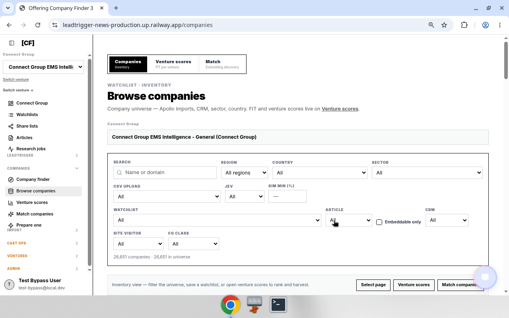
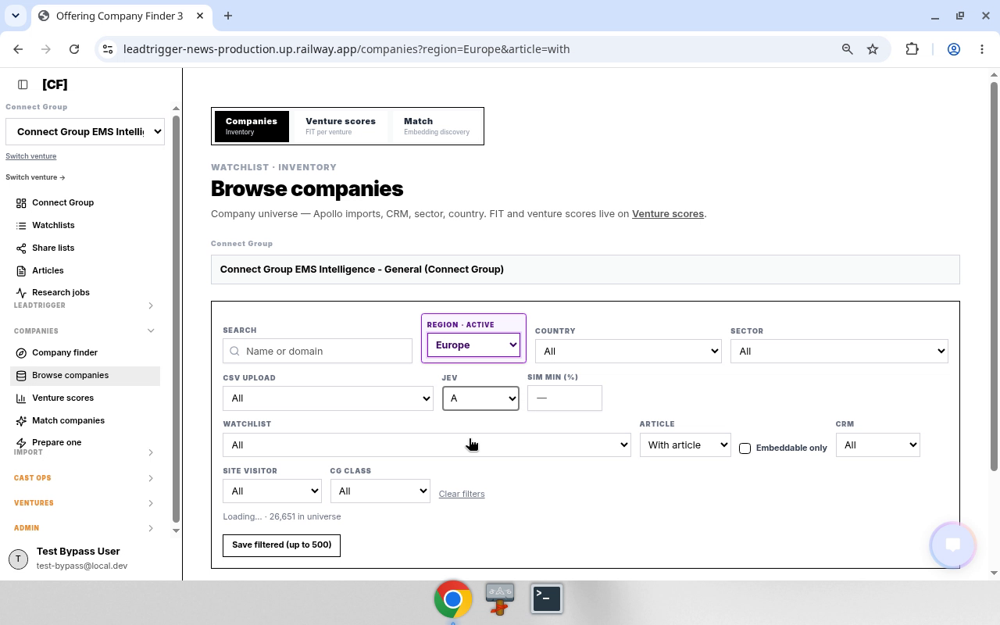

Goal: Browse the entire company universe — includes accounts with and without articles.
Canonical paths
| Step | Route / control |
|---|---|
| Hub | /companies/start → 2 Full company universe |
| Full universe | /companies (no article query) · hub id browse-all · companyBrowsePath() |
Decision rules
- Full universe ≠ with-articles. Card 1 excludes no-brief accounts. Card 2 returns both.
- Card 3 (
article=without) is missing-briefs only. - If
articlequery is absent → with + without. - Do not navigate to
?article=withand call that Full universe.
Bot sequence
- Open
/companies/start. - Click 2 Full company universe →
/companies(noarticle=). - Optional filters (watchlist, region, CG class) — keep
articleunset for true full universe. - Optional Save filtered (up to 500).
- Rows may lack share / Deep research when there is no article — expected.
- Report filter state + sample companies.
Anti-patterns
- Using
article=withand calling it Full universe. - Expecting every row to have an
articleKey.
Media


Full step MANUAL: media/02-full-company-universe/MANUAL.md
Related crawlable pages: Step MANUAL · Hub · Appendix